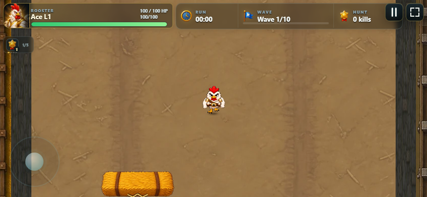
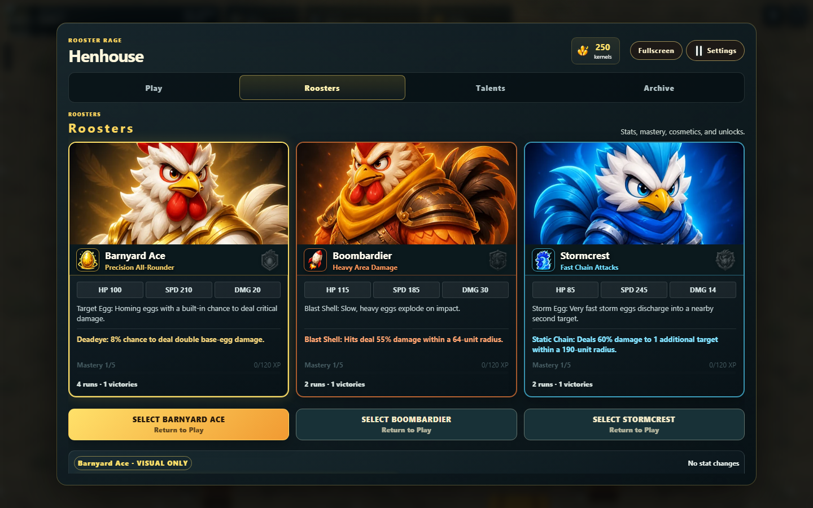
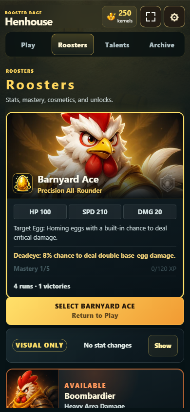
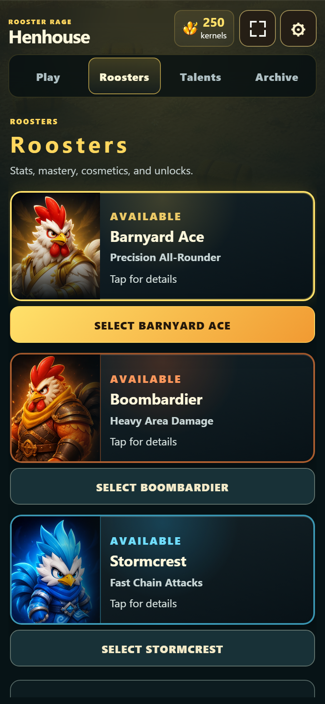
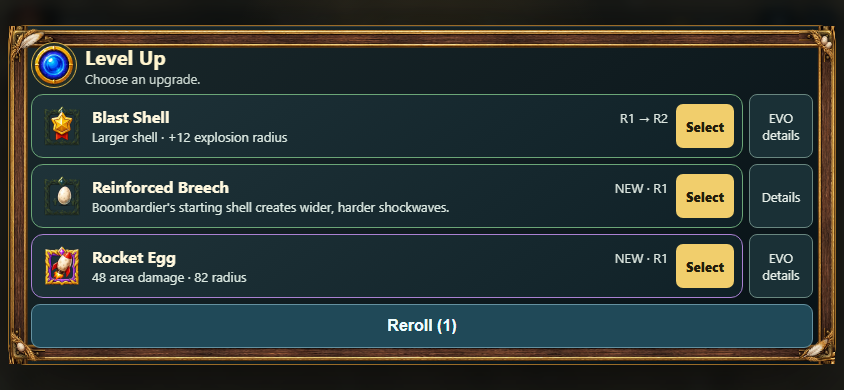
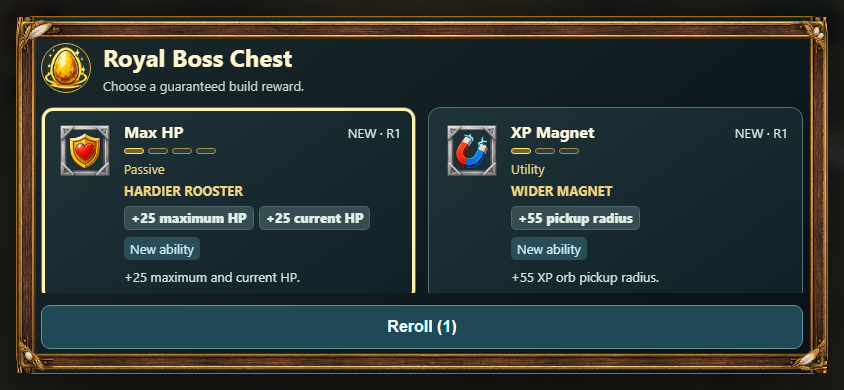
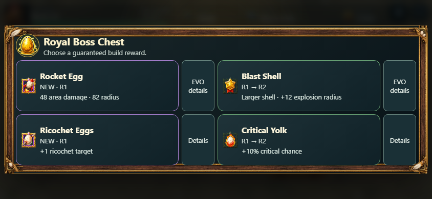
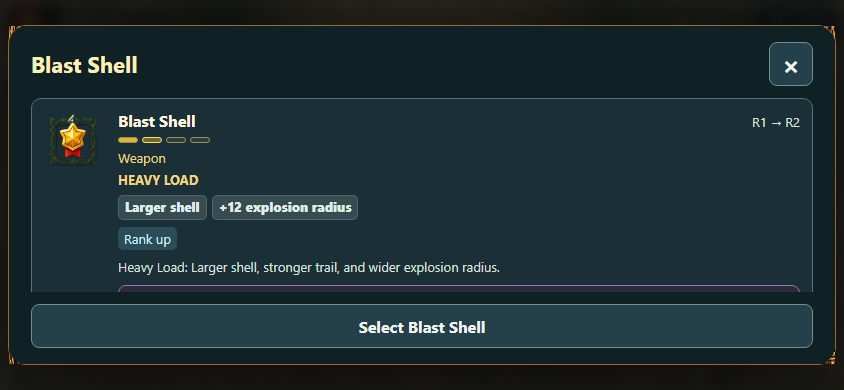

Natürlicher Bodenkontakt


Der helle technische Ring wurde durch einen weichen braunen Kontaktschatten ersetzt. Beim Gehen verändert er sich dezent mit dem Schritt. Kamera, Figurengröße und Trefferfläche bleiben gleich.
Gleiche Arena, Figur und Fenstergröße 844 × 390. Vorbereitete Geometriezustände; Animationspose und Framezeit können abweichen. Der Verlust der hellen Markierung muss zusätzlich im Gedränge auf echten Handys bewertet werden.
Gleich hohe Charakterkarten


Porträts, Werte, Fähigkeiten, Mastery und Auswahlaktionen sind auf gemeinsamen Zeilen ausgerichtet. Die Auswahl bleibt goldfarben hervorgehoben. Ein gemeinsamer Kosmetikbereich folgt unter der Kartenreihe und zeigt den betrachteten Hahn.
Dieselben freigeschalteten Charaktere und dieselbe Fenstergröße 1440 × 900. Der gemeinsame Kosmetikbereich liegt teilweise unterhalb des sichtbaren Ausschnitts und ist über den Menüscrollbereich erreichbar.
Mobile Charakterübersicht


Alle drei Einträge verwenden dasselbe kompakte Format. Die Charakterübersicht springt beim Betrachten einer anderen Figur nicht mehr zwischen einer großen und zwei kleinen Karten. Vollständige Werte und Fähigkeiten stehen im gemeinsamen Detailbereich darunter.
Fenstergröße 390 × 844; gleiche Charakterfreischaltungen. Pixeldichte rechts 2, Darstellung links und rechts gleich groß. Antippen zeigt die Details; die gesonderte Auswahlaktion übernimmt den Hahn und führt zu Play zurück.
Alle drei Upgrades im Querformat


Drei kompakte Zeilen zeigen gleichzeitig Icon, Name, Rang und Hauptwirkung. Jede Zeile hat eine klare Auswahlfläche und eine separate Details-Aktion. EVO-Angebote kennzeichnen ihre Rezeptdetails. Reroll bleibt erreichbar.
Dieselben drei Angebote bei 844 × 390. Vollständige Beschreibungen, Synergien und EVO-Voraussetzungen stehen in der Detailansicht. Der Wechsel dorthin wählt kein Upgrade und erhält Angebote und Reroll.
Vier Bossbelohnungen im Querformat


Das kompakte Raster hält alle vier Angebote gleichzeitig sichtbar. Vollständige Wirkungen bleiben über Details zugänglich. Auch der vierte Eintrag kann regulär gewählt werden.
Gleiche Fenstergröße 844 × 390, unterschiedliche Belohnungsangebote und vorausgehende Auswahlzustände. Dieser Vergleich beurteilt die Platzverteilung, nicht Qualität oder Balance der Belohnungen.
Neue Detailansicht
Die vollständigen Effekte und Rezepte bleiben in einem eigenen Scrollbereich zugänglich. Zurück führt zur unveränderten Auswahl; eine bewusste Bestätigung übernimmt das Upgrade.
